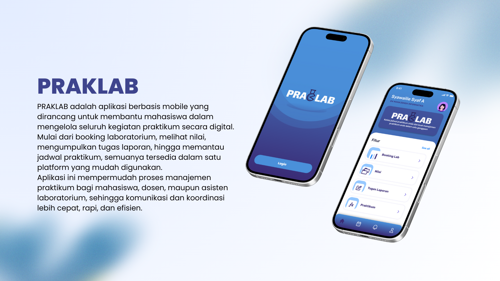

MINI PROYEK SAYA

Aplikasi Coffee Shop
Membuat prototipe aplikasi untuk coffee shop dengan tampilan modern, fitur pemesanan online, dan halaman menu yang interaktif.
#UI/UX
#Figma

Website Rumah Makan
Merancang website responsif untuk rumah makan dengan halaman home, about, dan daftar menu yang user-friendly.
#HTML
#CSS

Dokumentasi Praktikum Lab
Membuat laporan dan dokumentasi praktikum dengan rapi serta visual yang menarik untuk memudahkan pemahaman materi.
#Documentation
#Teamwork

Pengelola Media Sosial
Mengelola konten dan desain media sosial HIMAFORTIC bersama tim, menjaga branding, dan meningkatkan interaksi audiens.
#SosialMedia
#Desain
#ContentCreator